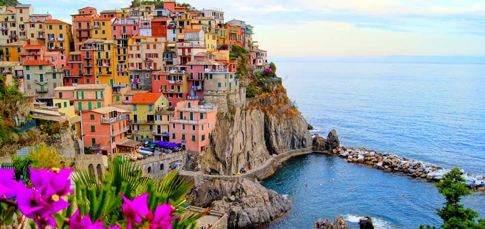
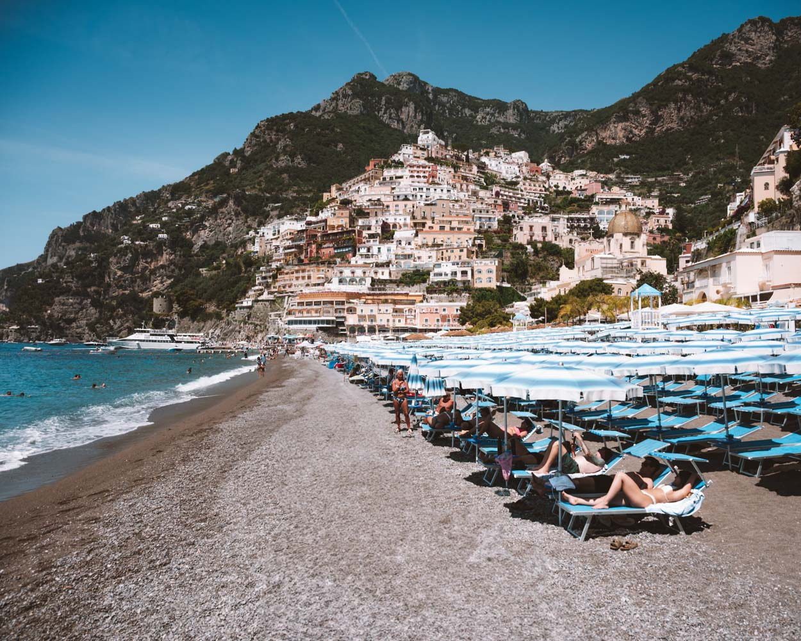
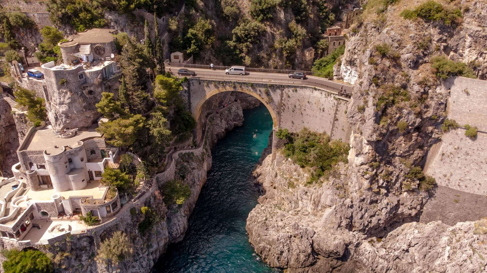

Sobre o destino
A Costa Amalfitana é um dos destinos de praia mais famosos da Europa, com águas cristalinas, enseadas escondidas e vilarejos à beira-mar que parecem cenários de filme.
Pontos Turísticos Imperdíveis:
- Praias de Positano: Águas azul-turquesa e clima romântico.
- Amalfi Beach: Praia central com vistas incríveis.
- Fiordo di Furore: Praia escondida entre falésias.
- Praias de Maiori: Faixa de areia mais extensa da região.
- Costa Mediterrânea: Cenário perfeito para banho e passeios de barco.
Guia Rápido

Melhor época: Maio a junho e setembro a outubro - clima agradável e menos movimento.

Como chegar: O aeroporto mais próximo é o de Nápoles, seguido de trajeto de carro ou barco pela costa.

Idioma: Italiano - inglês é mais comum em áreas turísticas.

Moeda: Euro (€) - cartões são aceitos em muitos lugares.
Custos Médios
- Hotel: €90 - €300 por noite
- Alimentação: €20 - €60 por refeição
- Transporte: €5 - €30 por viagem
Localização
Galeria de Fotos


